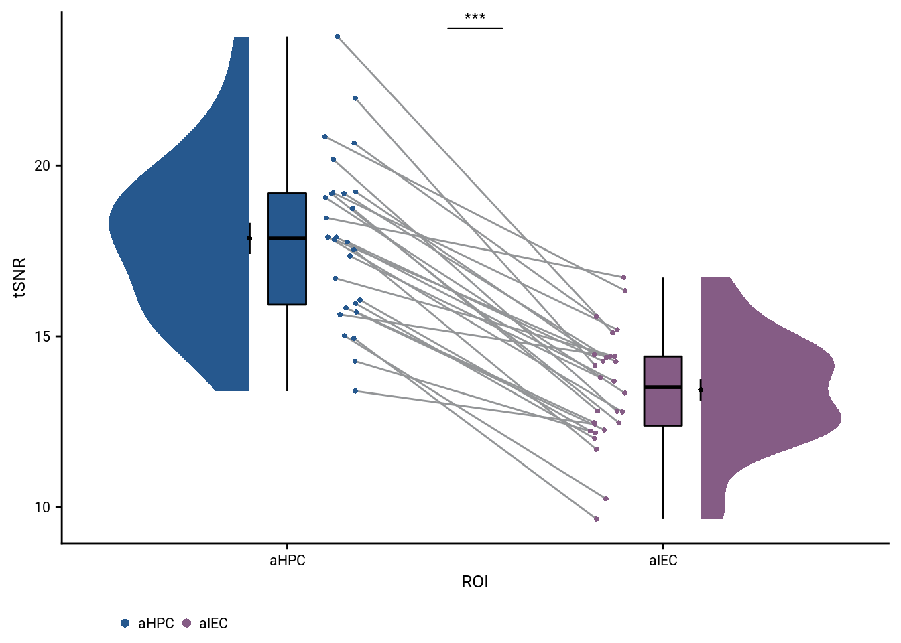

9 Signal to noise ratio
The temporal signal-to-noise ratio was quantified as the mean unsmoothed signal over time divided by its standard deviation. It was calculated for each voxel and then averaged across voxels in a region of interest.
We want to contrast the signal to noise ratio in our regions of interest. We will look at both the temporal and spatial signal to noise ratio. We will used the cleaned voxel time series that we also extracted the multi-voxel patterns from for this.
snr_dir <- here("data", "mri", "processed", "SNR")
invisible(lapply(file.path(snr_dir, subjects),
function(x) if(!dir.exists(x)) dir.create(x, recursive = TRUE)))9.1 Calculate voxel-wise temporal SNR
The first step is to calculate the temporal signal to noise ratio for each voxel. We use fslmaths for that via the fslr-package. Specifically, the tSNR of a voxel is its temporal mean divided by its standard deviation over time. This is done for each of the ten blocks of each run of the picture viewing task.
# build a tibble with the info we'll need tp build the file names (will be overwritten later)
snr_df <- tibble(subject = rep(subjects, each = n_runs*n_blocks),
run = rep(rep(runs, each = n_blocks), n_subs),
run_no = rep(rep(c(1,2), each = n_blocks), n_subs),
block = rep(c(1:n_blocks), n_runs*n_subs)
)
# create the file names to use
filt_func_fn <- file.path(dirs$samespace_dir,
paste0("VIRTEM_P", snr_df$subject),
sprintf("VIRTEM_P%s_RSA_%02d_Block%02d_func.nii.gz",
snr_df$subject, snr_df$run_no, snr_df$block))
tMean_fn <- file.path(snr_dir, snr_df$subject,
sprintf("%s_RSA_%s_block%02d_tMean.nii.gz",
snr_df$subject, snr_df$run, snr_df$block))
tSd_fn <- file.path(snr_dir, snr_df$subject,
sprintf("%s_RSA_%s_block%02d_tSd.nii.gz",
snr_df$subject, snr_df$run, snr_df$block))
tSNR_fn <- file.path(snr_dir, snr_df$subject,
sprintf("%s_RSA_%s_block%02d_tSNR.nii.gz",
snr_df$subject, snr_df$run, snr_df$block))
# define function to calculate tSNR
calc_tSNR <- function(fourD_fn=NULL, tMean_fn=NULL, tStd_fn=NULL, tSNR_fn=NULL){
# calculate temporal mean for each voxel
fslr::fsl_maths(file = fourD_fn, opts = "-Tmean", outfile = tMean_fn,
verbose = FALSE, retimg = FALSE)
# calculate temporal mean for each voxel
fslr::fsl_maths(file = fourD_fn, opts = "-Tstd", outfile = tStd_fn,
verbose = FALSE, retimg = FALSE)
# calculate temporal mean for each voxel
fslr::fsl_div(file = tMean_fn, file2 = tStd_fn, outfile = tSNR_fn,
verbose = FALSE, retimg = FALSE)
}
# apply to images in questions (invisible to avoid overly long output)
invisible(mapply(calc_tSNR, fourD_fn=filt_func_fn, tMean_fn=tMean_fn, tStd_fn=tSd_fn, tSNR_fn=tSNR_fn))9.2 Average tSNR per ROI
To find the average tSNR for a given ROI, we load the tSNR image and the ROI mask before calculating the mean across voxels. Here we define the function that returns the mean tSNR, given the file names of the tSNR image and the ROI masks.
# function to calculate the mean tSNR for an ROI
get_ROI_tSNR <- function(roi_fn, tSNR_fn){
# load images
tSNR_nii <- neurobase::readNIfTI2(tSNR_fn)
roi_nii <- neurobase::readNIfTI2(roi_fn)
# the tSNR values of the ROI voxels
snr_dat <- tSNR_nii[roi_nii==1]
# return the average
return(mean(snr_dat))
}Let’s apply the function and store the tSNR values for each block in each run.
snr_df <- tibble(subject = rep(subjects, each = n_runs*n_blocks*length(rois)),
roi = rep(rep(rois, each = n_runs * n_blocks),n_subs),
run = rep(rep(runs, each = n_blocks), length(rois)*n_subs),
block = rep(c(1:n_blocks), n_runs*length(rois)*n_subs),
tSNR = NA)
for (i in 1:nrow(snr_df)){
snr_df$tSNR[i] <- get_ROI_tSNR(roi_fn = here("data", "mri", "rois", snr_df$roi[i], "samespace",
sprintf("P%s_%s_ss_fs.nii.gz",
snr_df$subject[i], snr_df$roi[i])),
tSNR_fn = file.path(snr_dir, snr_df$subject[i],
sprintf("%s_RSA_%s_block%02d_tSNR.nii.gz",
snr_df$subject[i], snr_df$run[i], snr_df$block[i])))
}Lastly, we want to write out the dataframe with the tSNR values for later analysis.
# save the relevant data
fn <- file.path(dirs$data4analysis, "snr.txt")
write.table(snr_df, file = fn, append = FALSE, sep = ",", dec = ".",
row.names = FALSE, col.names = TRUE)9.3 Contrast tSNR between aHPC and alEC
We begin by loading the SNR data from file.
# load data from CSV
fn <- file.path(dirs$data4analysis, "snr.txt")
col_types_list <- cols_only(
subject = col_factor(),
roi = col_factor(levels = rois),
run = col_factor(levels = runs),
block = col_double(),
tSNR = col_double()
)
snr_data <- as_tibble(read_csv(fn, col_types = col_types_list))
head(snr_data)| subject | roi | run | block | tSNR |
|---|---|---|---|---|
| 031 | aHPC_lr | pre | 1 | 26.9 |
| 031 | aHPC_lr | pre | 2 | 25.2 |
| 031 | aHPC_lr | pre | 3 | 25.1 |
| 031 | aHPC_lr | pre | 4 | 25.5 |
| 031 | aHPC_lr | pre | 5 | 25.4 |
| 031 | aHPC_lr | pre | 6 | 24.1 |
To contrast the global tSNR between the aHPC and the alEC, we need to average across all blocks and runs to obtain one value per ROI per participant.
# calculate the average tSNR per ROI for each suject
snr_data %>% filter(roi == "aHPC_lr" | roi == "alEC_lr") %>%
group_by(subject, roi) %>%
summarise(tSNR = mean(tSNR), .groups="drop") -> snr_avgTo test whether the tSNR differs between the aHPC and the alEC we run a permutation-based t-test on the within-subject differences.
set.seed(56) # set seed for reproducibility
stats <- snr_avg %>%
filter(roi=="aHPC_lr" | roi == "alEC_lr") %>%
group_by(subject) %>%
summarise(tSNR_diff = tSNR[roi=="aHPC_lr"]-tSNR[roi=="alEC_lr"],.groups = "drop") %>%
# test difference against 0
select(tSNR_diff) %>%
paired_t_perm_jb (., n_perm = n_perm)
# Cohen's d with Hedges' correction for paired samples using non-central t-distribution for CI
d<-cohen.d(d=(snr_avg %>% filter(roi == "aHPC_lr"))$tSNR,
f=(snr_avg %>% filter(roi == "alEC_lr"))$tSNR,
paired=TRUE, pooled=TRUE, hedges.correction=TRUE, noncentral=TRUE)## Warning in pt(q = t, df = df, ncp = x): full precision may not have been achieved in 'pnt{final}'
## Warning in pt(q = t, df = df, ncp = x): full precision may not have been achieved in 'pnt{final}'stats$d <- d$estimate
stats$dCI_low <- d$conf.int[[1]]
stats$dCI_high <- d$conf.int[[2]]
# print results
huxtable(stats) %>% theme_article()| estimate | statistic | p.value | p_perm | parameter | conf.low | conf.high | method | alternative | d | dCI_low | dCI_high |
|---|---|---|---|---|---|---|---|---|---|---|---|
| 4.44 | 12.4 | 1.09e-12 | 0.0001 | 27 | 3.71 | 5.17 | One Sample t-test | two.sided | 1.99 | 1.65 | 3.13 |
Summary Statistics: paired t-test comparing tSNR in aHPC and alEC t27=12.43, p=0.000, d=1.99, 95% CI [1.65, 3.13]
Here is a plot of the results
# add column with custom jitter
snr_avg <- snr_avg %>%
mutate(x_jit = as.numeric(roi) + rep(jitter(rep(0,n_subs), amount=0.05), each=2) * rep(c(1,-1),n_subs))
snr_figa <- ggplot(data=snr_avg, aes(x=roi, y=tSNR, fill = roi, color = roi)) +
geom_boxplot(aes(group=roi), position = position_nudge(x = 0, y = 0),
width = .1, colour = "black", outlier.shape = NA) +
scale_fill_manual(values = unname(c(aHPC_colors["within_main"], alEC_colors["main"]))) +
scale_color_manual(values = unname(c(aHPC_colors["within_main"], alEC_colors["main"])),
name = "roi", labels=c("aHPC", "alEC")) +
gghalves::geom_half_violin(data = snr_avg %>% filter(roi == "aHPC_lr"),
aes(x=roi, y=tSNR),
position=position_nudge(-0.1),
side = "l", color = NA) +
gghalves::geom_half_violin(data = snr_avg %>% filter(roi == "alEC_lr"),
aes(x=roi, y=tSNR),
position=position_nudge(0.1),
side = "r", color = NA) +
stat_summary(fun = mean, geom = "point", size = 1, shape = 16,
position = position_nudge(c(-0.1, 0.1)), colour = "black") +
stat_summary(fun.data = mean_se, geom = "errorbar",
position = position_nudge(c(-0.1, 0.1)), colour = "black", width = 0, size = 0.5) +
geom_line(aes(x = x_jit, group=subject,), color = ultimate_gray,
position = position_nudge(c(0.15, -0.15))) +
geom_point(aes(x=x_jit, fill = roi), position = position_nudge(c(0.15, -0.15)),
shape=16, size = 1) +
scale_x_discrete(labels = c("aHPC", "alEC")) +
ylab('tSNR') + xlab('ROI') +
guides(fill= "none", color=guide_legend(override.aes=list(fill=NA, alpha = 1, size=2))) +
#annotate(geom = "line",x=c(1.3, 1.7), y=25, size=0.5) +
annotate(geom = "text", x = c(1.5), y = Inf,
label = 'underline(" *** ")', hjust = 0.5, vjust = 1, parse = TRUE) +
guides(fill= "none", color=guide_legend(override.aes=list(fill=NA, alpha = 1, size=2))) +
theme_cowplot() +
theme(text = element_text(size=10, family = font2use), axis.text = element_text(size=8),
legend.position = "right") Save the figure with theme to match the other figures.
snr_fig <- snr_figa +
theme(plot.tag = element_text(size = 10, face="bold"),
plot.tag.position = "topleft",
#plot.margin=grid::unit(c(5,8,5,0), "pt"),
text = element_text(size=10, family=font2use),
legend.text=element_text(size=8),
legend.title=element_blank(),
legend.position = 'bottom',
legend.spacing.x = unit(1, 'mm'),
legend.key.size = unit(3,"mm"),
legend.margin = margin(0,0,0,1, unit="cm"))
# save and print
fn <- here("figures", "sf08")
ggsave(paste0(fn, ".pdf"), plot=snr_fig, units = "cm",
width = 5, height = 10, dpi = "retina", device = cairo_pdf)
ggsave(paste0(fn, ".png"), plot=snr_fig, units = "cm",
width = 5, height = 10, dpi = "retina", device = "png")
snr_fig
Supplemental Figure 6. Temporal signal-to-noise ratio in the anterior hippocampus and the anterior-lateral entorhinal cortex. A. The temporal signal-to-noise ratio was quantified as the mean unsmoothed signal over time divided by its standard deviation. It was calculated for each voxel and then averaged across voxels in a region of interest. The temporal signal-to-noise ratio was higher in the anterior hippocampus (aHPC) than in the anterior-lateral entorhinal cortex (alEC, summary statistics: t27=12.43, p<0.001). Circles show individual participant values; boxplot shows median and upper/lower quartile along with whiskers extending to most extreme data point within 1.5 interquartile ranges above/below the upper/lower quartile; black circle with error bars corresponds to mean±S.E.M.; distribution shows probability density function of data points. *** p<0.001